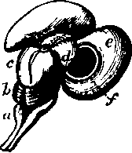

The Whole Of The Brain Above The Level Of The Tentorium. Continued
Description
This section is from the book "Animal Physiology: The Structure And Functions Of The Human Body", by John Cleland. Also available from Amazon: Animal Physiology, the Structure and Functions of the Human Body.
The Whole Of The Brain Above The Level Of The Tentorium. Continued
147. On the under surface, or base of the brain, the crura cerebri are crossed by two bands of fibres, which can be traced round the crura to the back parts of the optic thalami, and to the corpora quadrigemina. These bands, the optic tracts, meet in the middle line, and enclose a lozenge-shaped interval between the crura; at their place of junction, the optic commissure, they exchange fibres, and in front of this they diverge as the optic nerves, or nerves of sight, to the eyeballs. In the lozenge-shaped interval, between the crura, are seen a pair of white bodies like small peas, the corpora albicantia, which are closely connected with the optic thalami, and in front of them a funnel of membranous grey brain matter, the infundibulum, leading to a firm body which lies in the sella turcica of the sphenoid bone, and is called the pituitary body—a structure certainly not nervous, of function quite unknown, but well developed in all divisions of the vertebrata. Outside the fore part of the lozenge-shaped interval, on each side lies a deep fissure, fissure of Sylvius, separating the middle from the anterior lobe of the hemisphere, and in this is concealed a group of convolutions, the island of Reil, corresponding exactly in position with the corpora striata seen from the interior of the brain. On the under surface of the anterior lobes are the olfactory bulbs, from which the nerves of smell take origin.
148. There are many other complications in the structure of the brain which have not been alluded to; but probably the best general conception of the whole organ will be obtained by looking now at some of the simpler forms seen in the lower animals, and in development.
If we examine the brain of a codfish, we see at the back part the " posterior" columns of the cord separate one from the other, so as to leave a hollow between them, with a mesial groove, which is continuous with the central canal of the cord, and is the fourth ventricle. Overlying this is a mesial pouch, the cerebellum; in front of the cerebellum are two bodies, the optic lobes, likewise hollow; and in front of the optic lobes is another pair of small bodies, which may be called hemisphere-vesicles; while foremost of all are two olfactory lubes or bulbs. In front of the medulla oblongata, on the under surface, are two masses placed close together with a slight elevation between them, the hypo-aria or inferior lobes, and immediately in front of them the pituitary body. The hypoaria lie beneath the optic lobes; and, in front of them, apparently arising from the optic lobes, are the optic nerves, which, as they pass forwards, cross one over the other, so that each supplies the eye of the side opposite to that from which it arises.
Fig. 103. Brain of a Cod. A, From above. B, From below. a, Medulla oblongata; b, cerebellum; c, optic lobe; d, hemisphere-vesicle; e, olfactory bulb; f,f, optic nerves; g, g, hypo-aria; h, pituitary body.
Fig. 104. Brain of a Turtle, opened along the right side. a, Cerebellum; b, optic lobe ; c, hemisphere; d, olfactory bulb; e, pineal body; f, opening into infundibulum, and, to the left of that, the choroid plexus; g, corpus striatum; h, optic nerve.
In a turtle's brain there is no difficulty in recognising the medulla oblongata, cerebellum, optic lobes, and olfactory bulbs, and the olfactory and optic nerves; but the hemisphere-vesicles are much larger than in the cod. On opening up the brain, the common ventricle, prolonged forwards underneath the cerebellum, is seen to turn downwards, and terminate in a cul-de-sac at the pituitary body; and, above this point, it bifurcates to extend through the hemisphere-vesicles and olfactory bulbs. In the floor of each hemisphere-vesicle is a thickened part, the corpus striatum; and in the cavity of the vesicle there is a digitate vascular expansion of the pia mater, the choroid plexus, which enters from the exterior at a spot on the mesial side of the vesicle, at its back part, where there is a breach of continuity in the brain matter of the vesicular wall. There is also another vascular development inwards of the pia mater, between the cerebellum and the medulla oblongata, the choroid plexus of the fourth ventricle. In this brain we miss the hypoaria of the brain of fishes; but it may be noted that, close to the position where they might be expected, there is seen in the interior a thickening at the sides of the mesial canal, where it dips down at its termination. The optic nerves at their decussation are partially blended in an optic commissure, and behind that point are inseparable from the brain, and named optic tracts.
Fig. 105. Brain of a Turkey. a, Medulla oblongata ; b, cerebellum ; c, optic lobe; d, roof of hemisphere reflected to show corpus striatum; e, optic nerve.
In the brain of a bird, for example the turkey, the cerebellum is no longer a mere hollow vesicle; its cavity is minute, its surface covered with grey matter, and thrown into deep transverse laminæ The optic lobes project laterally, and even downwards, instead of upwards. There is a thorough decussation of the optic tracts. The hemisphere - vesicles when opened are seen to be covered with a very thin lamina, and filled up by the projection upwards of the corpora striata, so that what are usually called the hemispheres of birds, may be said to consist principally of corpora striata. Between the hemisphere-vesicles and the optic lobes there is a thick neck of substance, but no very important mass deserving a name.
149. If we pass now to a mammalian brain in a foetal stage, such as the lamb's brain in fig. 106, we have little difficulty in recognising corresponding or homologous structures. The medulla oblongata and cerebellum are obvious. In front of the cerebellum are the optic lobes, placed superiorly as in reptiles and fishes, and constituting the structures divided in mammals by a crucial depression into four parts, and called the corpora quadrigemina. In front of these are the hemisphere-vesicles containing the corpora striata; but a little care suffices to turn the hemisphere-vesicles outwards, and then come into view between them the optic thalami, in this early stage united, like the corpora quadrigemina, one with the other, over the mesial canal, and covered with pia mater. Along by the anterior and outer margin of each of the optic thalami, a fissure is seen between it and the hemisphere-vesicle, at which, as in the turtle, a large choroid plexus enters; and the ruptured margin of the vesicle has its edge turned away from the middle line into the interior of the cavity. At a later period this everted part adheres, across the middle line, with its fellow of the opposite side; and thus is formed a structure peculiar to mammals, the fornix, separated from the corpora quadrigemina and optic thalami by a transverse fissure, containing the invagi-nated part of the pia mater supporting the choroid plexus, and called the velum interpositum. At a still more advanced period of embryonic growth, the adjacent surfaces of the hemisphere-vesicles become joined together by development of the corpus cal-losum, which is united posteriorly to the back part of the fornix, then arches forwards at a higher level, and turns downwards in front so as to enclose a mesial space above that body. The parts of the walls of the vesicles limiting this mesial space continue very slender, and constitute the septum lucidum; and the space itself is termed the fifth ventricle. The cavities of the hemisphere-vesicles are called the lateral ventricles; the space between the velum interpositum and optic thalami, as well as between these bodies, is the third ventricle ; the fourth ventricle, as has already been stated, is the space between the cerebellum and medulla oblongata; and the canal continued forwards from this, beneath the corpora quadrigemina, is called the iter (a tertio ad quartum ven-triculum) or aqueduct of Sylvius.
Fig. 106. Brain of Embryo Lamb, from above and the right side. a, Medulla oblongata; b, cerebellum; c, corpora quadrigemina ; a, optic thalami; e, right hemisphere - vesicle reflected;f, corpus striatum. Round the opening into the lateral ventricle is the rudimentary fornix. The choroid plexus, which, at this period, is exceedingly large, has been removed.
Fig. 107. The Lateral Ventricles. a. Posterior border of corpus callo-sum; b, front of corpus callosum, and below it fifth ventricle, bounded by the layers of theseptum lucidum; c, fornix, and, beyond it, the choroid plexus; d, corpus striatum, and, between it and the fornix, a portion of the optic thalamus ; e, section of corpus striatum; f, descending cornu of lateral ventricle, with hippocampus major in its floor, and tænia hippocampi in front; g, hippocampus minor in the floor of the posterior cornu.
In the developed brain, the fissures into the lateral ventricles, converted by the adhesion of the lateral halves of the fornix into one transverse fissure as pointed out, extend round the crura cerebri to the extremity of the middle lobe of the brain at the inner end of the fissure of Sylvius; and the extensions of the lateral ventricles, into which they open, are called the descending cornua; the margin of the fissure in each descending cornu is bounded by a slender prolongation of the fornix, called tarda hippocampi, because it lies beside a convexity of the floor of the cornu, the hippocampus major: the posterior and anterior cornua being blind pouches in the corresponding lobes. In front, the fornix dips down in the form of a couple of pillars in front of the optic thalami; and these pillars, after dipping to the base of the brain, and forming the corpora albicantia, twist upwards, and enter, each one, the optic thalamus of its own side. The fornix is thus a band of junction between the back parts of each hemisphere and the corresponding optic thalamus.
In leaving this difficult subject, it is necessary to point the student's attention to one point which appears to have escaped the attention of anatomists, but which, to me at least, is pretty obvious from considerations alluded to in the preceding description, namely, that the hypoaria of fishes correspond with the optic thalami of mammals. In corroboration of this view, it may be mentioned that in various fishes the optic nerves arise from the hypoaria as well as from the optic lobes or corpora quadrigemina. No donbt the optic thalami look upwards, and the hypoaria downwards; but in their first development the optic thalami are directed downwards, the embryonic vesicle from which they are derived (p. 287) being turned directly down; and in the position of the optic lobes of birds, as compared with those of other animals, we have a parallel instance of homologous brain-masses being developed in the adult state in different directions. My excuse for mentioning this in an elementary work is, that without recognition of this hitherto unappreciated point the simplicity of the brain cannot be recognised.
Continue to:
- prev: 145. The Whole Of The Brain Above The Level Of The Tentorium
- Table of Contents
- next: 150. Cranial Nerves (Fig 99)